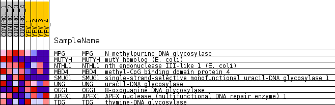
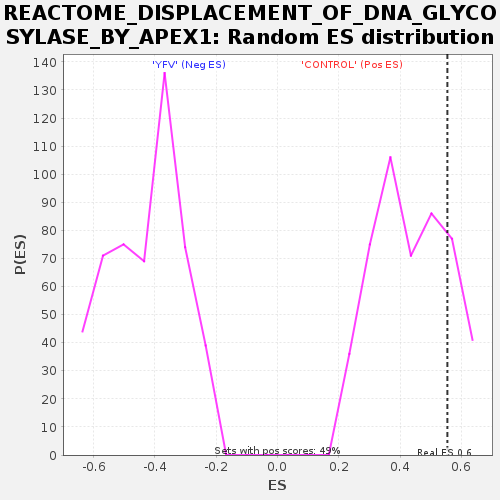

Profile of the Running ES Score & Positions of GeneSet Members on the Rank Ordered List
| Dataset | MATRIZ_GSE99081_collapsed_to_symbols.gsea_CLASE_99081.cls#CONTROL_versus_YFV |
| Phenotype | gsea_CLASE_99081.cls#CONTROL_versus_YFV |
| Upregulated in class | CONTROL |
| GeneSet | REACTOME_DISPLACEMENT_OF_DNA_GLYCOSYLASE_BY_APEX1 |
| Enrichment Score (ES) | 0.5544812 |
| Normalized Enrichment Score (NES) | 1.2840493 |
| Nominal p-value | 0.18699187 |
| FDR q-value | 0.96284103 |
| FWER p-Value | 1.0 |
| SYMBOL | TITLE | RANK IN GENE LIST | RANK METRIC SCORE | RUNNING ES | CORE ENRICHMENT | |
|---|---|---|---|---|---|---|
| 1 | MPG | N-methylpurine-DNA glycosylase | 89 | 1.316 | 0.3457 | Yes |
| 2 | MUTYH | mutY homolog (E. coli) | 432 | 0.862 | 0.5545 | Yes |
| 3 | NTHL1 | nth endonuclease III-like 1 (E. coli) | 2337 | 0.435 | 0.5532 | No |
| 4 | MBD4 | methyl-CpG binding domain protein 4 | 4181 | 0.228 | 0.5006 | No |
| 5 | SMUG1 | single-strand-selective monofunctional uracil-DNA glycosylase 1 | 7203 | 0.000 | 0.3145 | No |
| 6 | UNG | uracil-DNA glycosylase | 11401 | -0.139 | 0.0930 | No |
| 7 | OGG1 | 8-oxoguanine DNA glycosylase | 11508 | -0.148 | 0.1259 | No |
| 8 | APEX1 | APEX nuclease (multifunctional DNA repair enzyme) 1 | 12318 | -0.226 | 0.1364 | No |
| 9 | TDG | thymine-DNA glycosylase | 13698 | -0.394 | 0.1566 | No |

